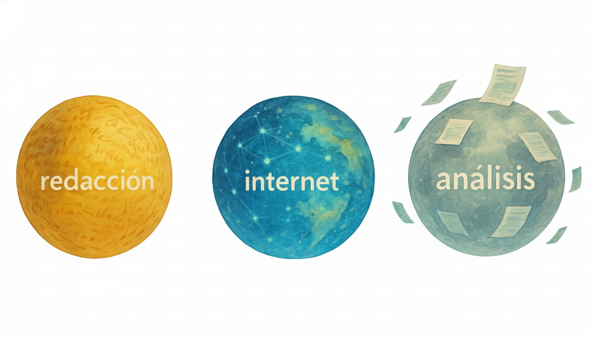

Resumen
Una de las preguntas más comunes que escucho en mis clases y consultorías es: ¿existe alguna inteligencia artificial que no alucine? La respuesta corta: no. Todas lo hacen. Lo importante no es negarlo, sino entender cuándo y por qué pasa, y cómo podemos convivir con ello sin perder confianza en la herramienta.
Las alucinaciones ocurren cuando la IA entrega información incorrecta, mezcla hechos o simplemente inventa algo que suena real. No lo hace con mala intención —es parte de cómo están diseñados los modelos actuales: predicen palabras según probabilidades, no certezas.
Somos early adopters de una tecnología en evolución
La inteligencia artificial generativa lleva apenas tres años de uso masivo. Somos parte de los primeros usuarios que están explorando sus límites, aprendiendo sus sesgos y, también, sus errores. Esa condición de “early adopters” nos obliga a convivir con una etapa experimental: la tecnología madura, pero aún no es infalible.
Las tres esferas donde se nota más la diferencia

- Redacción: En esta esfera (redactar textos, mails, escritos, o lo que sea) la IA no alucina, porque se mueve dentro de patrones lingüísticos y estructuras predecibles. No inventa “hechos”, solo desarrolla tus ideas con creatividad y coherencia según las instrucciones que le das.
- Investigación en Internet: En esta esfera es donde está el mayor riesgo de alucinación.. literalmente la IA puede mezclar fuentes incompletas o generar datos que suenan reales pero no lo son.
- Análisis de documentos adjuntos: cuando la IA trabaja sobre tus propios archivos (contratos, informes, PDFs), el riesgo disminuye notablemente. Tiene evidencia concreta y no necesita rellenar vacíos con suposiciones. Aun así, puede equivocarse si el documento es muy extenso, está mal formateado o contiene imágenes no reconocibles por OCR.
Cómo reducir el riesgo de alucinaciones 🧠
No se trata de no buscar en internet o pensar que todo lo inventa. Sigue siendo menos errónea que un humano promedio; pero un uso responsable de IA nos exige ser cuidadosos y usarla con criterio (si no, miren casos recientes en empresas como Deloitte, ver esta nota). A continuación comparto consejos y buenas prácticas que enseño a empresas para bajar la probabilidad de alucinación..
- Pide fuentes y fechas detalladas: no te quedes con la respuesta sin contexto. 🔎
- Usa RAG o tus propios documentos: mientras más información interna tenga la IA, menos inventará. 📁
- Exige un nivel de confianza: pide que indique su seguridad o que responda “no sé” si duda. 🤔
- Contrasta en dos fuentes: especialmente cuando la información sea reciente o crítica. 📚
- Revisión humana siempre: ningún copiloto reemplaza el criterio de una persona. 👤
- Prompts defensivos: agrega instrucciones como “si no estás 95% seguro, acláralo”. 🛡️
Ejemplos rápidos
- “¿Qué trae la nueva ley de impuestos publicada hace 10 días?” → alto riesgo.
- “¿Qué características tiene el auto lanzado este mes?” → alto riesgo.
- “¿Qué decía la ley tributaria de 1980?” → bajo riesgo.
La diferencia no está en la herramienta, sino en el tipo de pregunta y en cómo la verificas.
Mi punto de vista
Decir que “todas las IAs alucinan” no es pesimismo, es realismo. Reconocerlo nos obliga a usarlas con más inteligencia, a revisar lo que generan y a mantener siempre una capa humana de criterio. Si lo hacemos así, la IA no será una fuente sagrada, sino un copiloto confiable que potencia nuestra productividad sin reemplazar nuestra responsabilidad.
Checklist rápido
- 📅 Verifica fuentes y fechas.
- 📁 Usa tus propios documentos cuando sea posible.
- 🧠 Pregunta por nivel de confianza.
- 🔍 Contrasta antes de publicar.
- 🙋♂️ Mantén validación humana.
- 🛡️ Usa prompts defensivos.